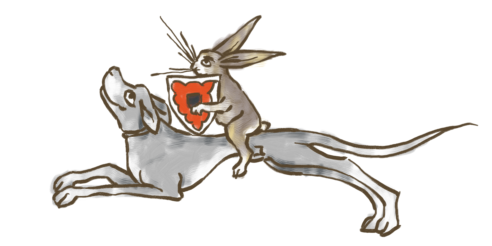
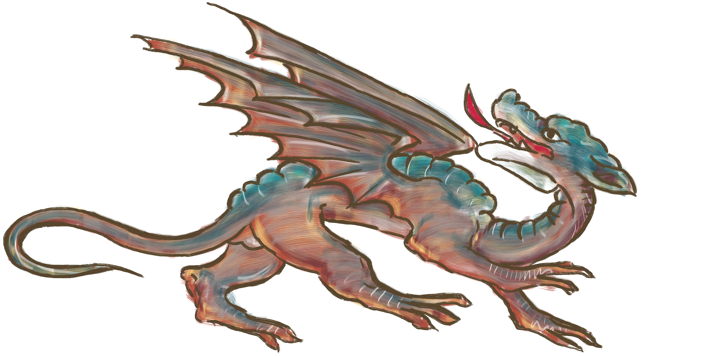

Humalasalon Talvi-ilta 5.-7.1.2024
Tammikuisen talven taitteessa on jälleen aika Humalasalon Talvi-iltain tarinoiden. Perinteitä kunnioittaen tarjolla aarnikansalle on pidot, jousiammuntaa Cupido-kisailun merkeissä, miekkailua, käsitöitä, illuminaatioita ja kalligrafiaa, sekä ohjelmaa myös lapsille ja lapsenmielisille.
Saapuminen ja lähtöaika
Tapahtumapaikalle saa saapua perjantaina klo 18 alkaen, ja tapahtuma loppuu sunnuntaina klo 11, johon mennessä huoneiden tulee olla siivottuina ja tapahtumapaikalta tulee lähteä kello 12 mennessä.
Tapahtumapaikka
Perinteiden lisäksi Talvi-illassa puhaltavat ensi vuonna uudet tuulet. Tapahtuma pidetään kokonaan uudessa paikassa Antaverkan leiri- ja kurssikeskuksessa Tampereen pohjoispuolella Ylöjärvellä hyvien kulkuyhteyksien päässä. Antaverkan leiri- ja kurssikeskuksesta löytyy kartanomainen päärakennus 48 majoittujalle, Punainen mökki 11 hengelle. Pihapiiristä löytyy kota ja monenlaisia ulkoaktiviteetteja innokkaille. Kartanon osoite on Antaverkantie 279, 33480 Ylöjärvi. Antaverkan ollessa meille uusi tapahtumapaikka, on tärkeää huomata muutama sääntö, joita tapahtumassa tulee noudattaa. Varausehtojen mukaan saunomisaika on perjantaina ja lauantaina klo 22 asti. Tämän jälkeen alueella alkaa rantarauha, jota jokaisen tapahtumaan osallistujan tulee kunnioittaa. Kymmenen jälkeen illalla kovaääninen liikkuminen piha-alueilla ei ole sallittua alueella olevan muun asutuksen vuoksi. Saunan lämmityksestä huolehtii kartanon vahtimestari, ja saunavuorojen ajankohta on sidottu hänen työvuoroihinsa. Lauantai-illan pidot huomioidaan aikataulutuksessa siten, että sekä saunominen että pitoihin osallistuminen on halukkaille mahdollista. Pitojen jälkeen iltaa voi jatkaa laulun, tanssin ja musiikin merkeissä kartanon päärakennuksessa. Antaverkan piha-alueet ovat kävijöiden vapaasti käytettävissä, lukuun ottamatta alueella olevaa kiipeilyseinää, jonka käyttö vaatii auktorisoidun köysitoiminnanohjaajan läsnäoloa. Alakerran varastojen materiaalit ja toimintatarvikkeet ovat nuorisopalveluiden omaisuutta.
Ajo-ohje Antaverkkaan
Helsingistä tullessa lähdetään Hämeenlinnan suuntaan E12-tietä ja jatketaan Hämeenlinnan jälkeen Tampereen suuntaan. Tampereelle tullessa noustaan Lakalaivan rampista lännen suuntaan E12-tietä. Ylöjärvelle saapuessa jatketaan suoraan kantatielle 65. Tokmannin kulmalta käännytään oikealle Hallitielle ja liikenneympyrästä poistutaan kolmannesta liittymästä. Seuraavasta liikenneympyrästä jatketaan suoraan ja kolmannesta liikenneympyrästä poistutaan kolmannesta liittymästä Kuruntielle. Kuruntietä jatketaan vajaa neljä kilometriä. Veittijärven jäätyä vasemmalle käännytään ensimmäisestä mahdollisesta risteyksestä oikealle. Tästä lähtien löytyvät opaskyltit perille asti. Tampereelta tullessa käännytään Vaasan tieltä Ylöjärven keskustaan vasemmalle ja liikenneympyrästä käännytään oikealle Kuruntielle, jota pitkin ajetaan vajaa viisi kilometriä. Veittijärven jäätyä vasemmalle käännytään ensimmäisestä mahdollisesta risteyksestä oikealle. Tästä lähtien löytyvät opaskyltit perille asti. Pulmatilanteissa Antaverkan leiri- ja kurssikeskuksen vahtimestari Sami Jokinen (p.040-7322910 / 03-5656 6577) opastaa Teidät ystävällisesti perille.Ilmoittautuminen ja maksaminen
Google-formsin kautta https://www.talvi-ilta.humalasalo.net/ilmoittautuminen maanantaina 13.11.2023 klo 18 alkaen. Tapahtumamaksu on seuran jäseniltä 50€ aikuiselta koko tapahtuman ajalta ja päiväkävijältä 20€. Ei-jäsenten hinta on 55€ koko tapahtumalta ja 25€ päiväkävijöiltä. Lapsilta (alle 12-vuotiaat) 25€ koko tapahtuman ajalta ja päiväkävijöiltä 10€. Maksu suoritetaan Hämeen Keskiaikaseuran tilille FI70 5680 0040 2682 74 sunnuntaihin 10.12.2023 mennessä. Maksa vasta saatuasi ilmoituksen tapahtumaan pääsystä. 10.12.2023 jälkeen maksaessasi hintaan lisätään myöhästymismaksu joka on 5€/hlö.
Vahtimestari
Leirikeskuksessa toimii vahtimestari, jonka antamia ohjeita tulee noudattaa. Vahtimestarilla on oikeus ja velvollisuus puuttua mahdollisiin häiriöihin tai järjestyssääntöjen rikkomisiin. Vahtimestari Sami Jokinen p. 040 7322910 / 03-5656 6577.
Tupakointi, alkoholi ja eläimet
Antaverkan leirikeskuksessa tupakointi on kielletty sisätiloissa. Tupakointi on mahdollista vain tupakkalain 12 § sallimissa rajoissa tarkoitukseen erityisesti merkityssä paikassa. Tapahtuma on tuttuun tapaan sivistyneesti kostea, miedot alkoholijuomat ovat sallittuja. Antaverkan sisätiloihin ei lähtökohtaisesti saa tuoda eläimiä, ainoastaan opaskoirat ovat sallittuja.
